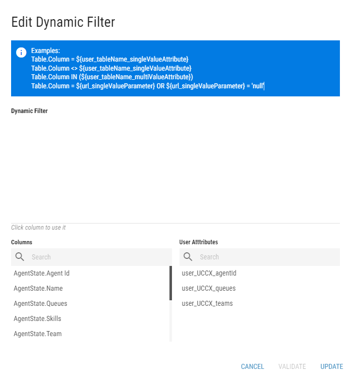

Dynamic Filter¶
Dynamic filters allow the user to filter displayed grid based values using user attributes or/and URL parameters. Filter is represented by expression with placeholders which are replaced with value from user attributes or received from the URL parameters at runtime. Specific grid columns and user attributes can be selected from the list of columns/user attributes, located at the bottom of the dialog.
Figure 1: Dynamic Filter dialog
{kind=link}
Filtering using User Attributes and URL parameters can be combined.
For more information about building an expression, see Expression builder chapter.
In case of using a specific grid column in the dynamic filter, the placeholder is defined in format: SourceTableAlias.Column.
SourceTableAliashas to be replaced with the alias of the targeted source table.Columnhas to be replaced with the specific column from the source table.
For more information about supported dynamic filter syntax, see the Microsoft documentation.
Filtering using User Attributes¶
Value placeholders are defined in filter in format: ${user_attributeName}.
attributeNamehas to be replaced with a specific user attribute.
When using connector associated user attribute, value placeholders are defined in filter in format: ${user_connectorName_attributeName}.
connectorNamehas to be replaced with the name of the connector, the user attribute is associated with.attributeNamehas to be replaced with a specific user attribute.
When using user attributes, the attributes of the currently logged in user are applied.
For more information about User Attributes, see ../../../../administration-tool-guide/business-units/security/users chapter.
Dynamic filter with one value placeholder
Agents.Agent = ${user_uccx_agentName}
Text values have to be enclosed in apostrophes either in url parameter filter:
?filter_agentName='Lara%20Croft'
or in dynamic filter expression:
Agents.Agent = '${url_agentName}'
Dynamic filter with one value placeholder with multiple values
Agents.Agent IN (${user_uccx_agentNames})
Each text value needs to be enclosed in apostrophes in user attribute definition
Dynamic filter with multiple value placeholders
In the following example, only agents that belong to the same team and with the same skill assigned as the logged in user will be selected.
Agents.Team = ${user_uccx_team} AND Agents.Skill = ${user_uccx_skill}
Filtering using URL parameters¶
Value placeholders are defined in filter in format: ${url_placeholderName}
Value placeholders are defined in URL in format: filter_placeholderName
Dynamic filter with one value placeholder
Agents.Agent = ${url_agentName}
This filter allows the user to specify a name of a single agent. Only rows that contain said agent in their Agent column will be displayed.
URL
To apply the filter, the following attribute needs to be added to the URL of the Layout:
?filter_agentName='Lara%20Croft'
When applied, only columns with Agent Lara Croft will be displayed.
Text values have to be enclosed in apostrophes either in url parameter filter:
?filter_agentName='Lara%20Croft'
or in dynamic filter expression:
Agents.Agent = '${url_agentName}'
Spaces need to be replaced with %20.
Dynamic filter with one value placeholder with multiple values
In case of filtering using URL parameters:
Agents.Agent IN ${url_agentNames}
This filter allows the user to specify a name of any number of agents. Only rows that contain said agents in their Agent column will be displayed.
URL
?filter_agentNames='Lara%20Croft','Sarrah%20Connor'
Each text value needs to be enclosed in apostrophes and separated by comma.
Dynamic filter with multiple value placeholders
In case of filtering using URL parameters:
In the following example, only agents that are in state defined in the URL, for a longer time than it is defined in the URL, will be selected.
Agents.State = ${url_state} AND Agents.Duration > ${url_duration}
Multiple expressions can be configured for the same grid. Each expression needs to be separated by AND.
URL
?filter_state='Not%20Ready'&filter_duration=60
Only agents, that are in the Not Ready state for more than 60 seconds, are displayed.
Each parameter need to be separated by &.